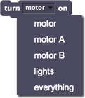

Ligue motores ou luzes.

Turn the lights on for 2 seconds when the space key is pressed, then turn it off.

You can select a LEGO-WeDo-compatible device from the dropdown menu: The 'motor' will turn on all motors on the WeDo hub. To control two motors separately, you can use 'motor A' and 'motor B'. Note: LEGO recommends only connecting one motor to the hub to limit power consumption.
To use turn on, you need WeDo motor(s) or lights connected to your computer via a LEGO WeDo hub.